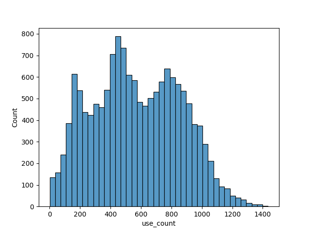
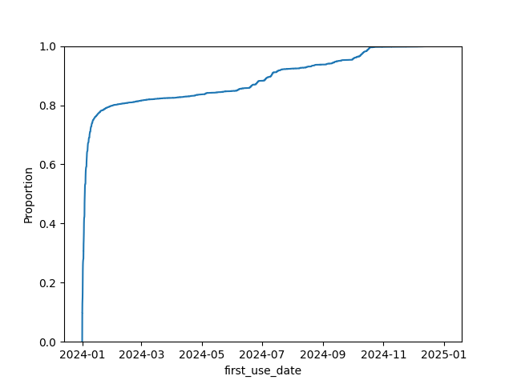
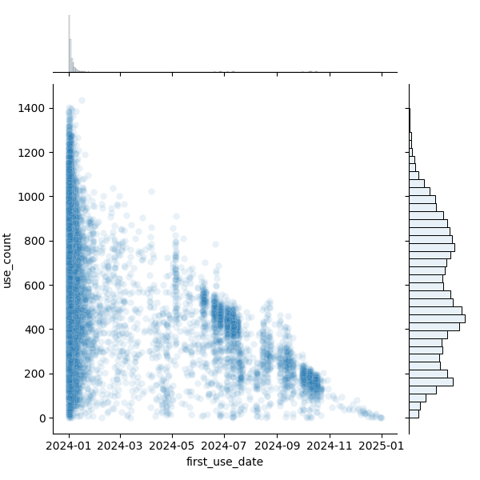

Bikes
A total of 14920 unique bikes were used during 2024.
SELECT COUNT(DISTINCT bike_id) FROM trips;
┌─────────────────────────┐
│ count(DISTINCT bike_id) │
│ int64 │
├─────────────────────────┤
│ 14920 │
└─────────────────────────┘
Bike trip count
The trip count among all bikes shows a multi-mode distribution.

Possible causes:
- Location: Some bikes move between high-traffic stations.
- Age: New bikes could be added in batches mid-year.
Bike first use date
We get thefirst use date for each bike and plotting the cumulative proportion of bikes used as the year goes on.

We assume that a bike's first use is a good indicator of the bikes age inside the system. The bike could be new or was assigned a new ID after refurbishing.
Here we can see that:
- most of the bikes were used in the first 2 months of the year.
- a steady amount of new bikes enters the float all-year round.
- a big increase in bikes is observed around July and October.
Bike age vs Trip count
Checking the correlation betweenn a bike's first trip date and the total trip count we observe:
- Bike Age and Trip count have an inverse relationship.
- Older bikes have a wide distribution of trip counts.
- Both observed groups of new bikes (July and October) have similar trip counts and represent 2 of the modes in the trip count distribution.
